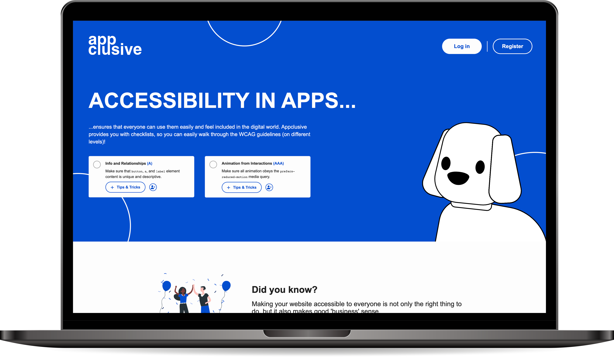
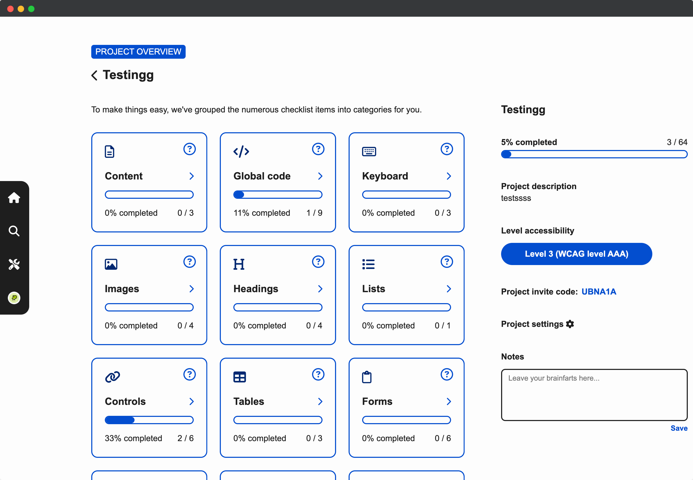
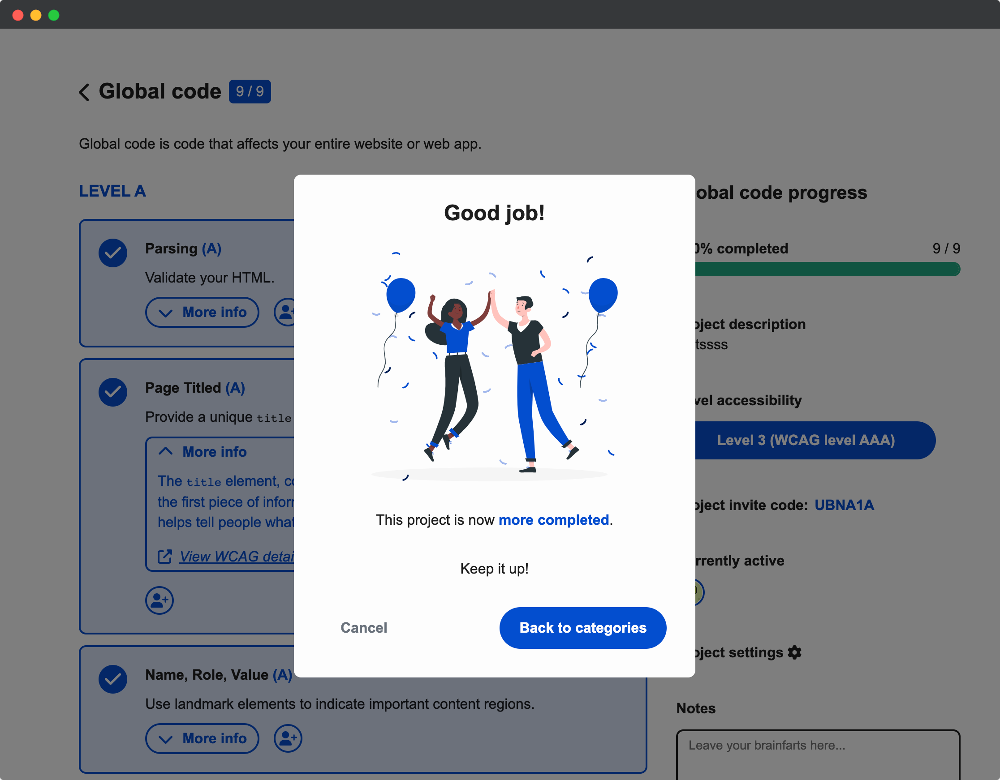
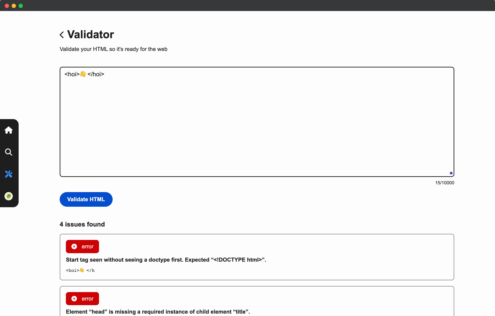

Appclusive
Appclusive is een online webtool ontworpen voor UX-designers en organisaties, om digitale producten te controleren op toegankelijkheid. UX-Designers moeten kunnen controleren of het project voldoet aan alle WCAG-standaarden en zullen daarom steeds beter in staat zijn om een toegankelijk ontwerp te creëren.
Website 
- 
- 
- 
Deze webtool is bedoeld om te motiveren en het voor ontwerpers gemakkelijker te maken om op basis van richtlijnen toegankelijkheid toe te passen op hun digitale producten. We hebben een gehele login flow gebouwd en ook extra's toegevoegd zoals een validator en een onboarding, ook hebben we een geheel herontwerp gemaakt in Figma en onze eigen database toegevoegd. Daarnaast hebben we het mogelijk gemaakt om gebruikers projecten aan te laten maken en collega's toe te voegen door middel van een "invite" code, de projecteigenaar kan ook checklist items toewijzen aan verschillende collega’s.